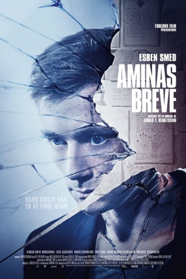
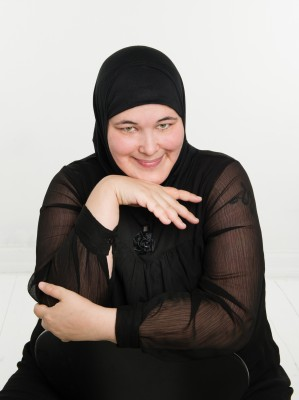

#10546 Aminas Briefe
 
 IMDB-Wertung: 5.5 / 10
IMDB-Wertung: 5.5 / 10  Metascore: 0
Metascore: 0 
Janus ist psychisch schwer krank, leidet unter Psychosen und wird in einer geschlossenen psychiatrischen Anstalt behandelt. Amina war eine ehemalige Klassenkameradin, die ihm während seiner Behandlung ständig Briefe schrieb. Die Briefe kamen plötzlich nicht mehr und Janus wurde schwer depressiv. Nach der Entlassung sucht er nach Amina und findet die alte Adresse ihrer Familie. Dort angekommen, fordert Aminas türkische Mutter ihn auf, sofort zu verschwinden. Janus sucht weiter, doch seine Psychosen kehren zurück, er leidet zunehmend unter Paranoia und Halluzinationen. Von Aminas Schwester erfährt er, dass Amina gegen ihren Willen verheiratet werden sollte und deshalb von zu Hause weggelaufen ist. Sie lebt jetzt mit einem Mann zusammen und hat den Kontakt zur Familie abgebrochen. Als er Amina schließlich doch findet, muss er sich einer Erkenntnis stellen, die seine Vorstellungskraft übersteigt …
Jahr: 2017
Dauer: 84 Minuten
FSK: 16
Land: Dänemark Studio: ARTETonspuren:
Untertitel:
Auflösung: 720p (1280x536) Größe: 1648 MB
Genre: Drama
Regisseur: Jacob Bitsch
Drehbuch: Jonas T. Bengtsson, Anders Ølholm
Soundtrack: Lukas Julian Lentz
Darsteller:
- Esben Smed als Janus
- Sarah-Sofie Boussnina als Gülden
- Lisa Carlehed als Astrid
- Inge Lise Goltermann als Friend on the street
- Kai Hoppe als Holding Team
- Niki Topgaard als Junkie
- Munir Avn als Ali
- Evrim Benli als Vahit
- Morten Bjørn als Junkie
- Malin Elisabeth Rømer Brolin-Tani als Receptionist
-  Johanna Brüel als Traveler
- Julie Carlsen als Sygeplejerske
- Anne Voigt Christiansen als Ansat i krisecenter
- Hans Henrik Clemensen als Cigarmanden
- Anna Elmose als Vagt i krisecenter
- Flemming Enevold als Overlægen
- Julian Greis als Plejer
- Torsten Hammann als Erik
- Joen Højerslev als Politimand
- Camilla Lehmann als Nadja
- Besnik Miftari als Hussein
- Sema Poyraz als Aminas mor
- Carl-Christian Riestra als David
- Omar Shargawi als Mahmut
- Michael Slebsager als Soren
- Daniel Hugo Sørensen als Nicky
- Siir Tilif als Amina
- Besir Zeciri als Erkan
Datei: X:\2017(A-F)\Aminas Briefe (2017, FSK16, 1280x536).mkv seit 21.01.2019
Festplatte: HD 2017(A-Z)-2018(A-F)
 Es gibt insgesamt 152 Filme in der Gruppe '2017(A-F)'
Es gibt insgesamt 152 Filme in der Gruppe '2017(A-F)'